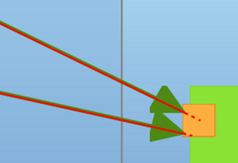
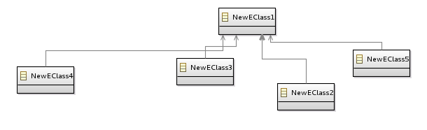
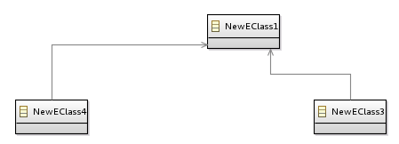

Summary: This evolution allows the specifier to force edges direction toward the center of a node.
| Version | Status | Date | Authors | Changes |
|---|---|---|---|---|
| v0.1 | DRAFT | 2014-06-06 | fbarbin | Initial version. |
| v0.2 | DRAFT | 2014-06-16 | fbarbin | Update after a first team discussion. |
| v0.3 | DRAFT | 2014-06-18 | fbarbin | Update after team review. |
| v0.4 | DRAFT | 2014-06-27 | fbarbin | Update after team review. |
| v0.5 | PROPOSAL | 2014-06-27 | fbarbin | Update after team review. |
Relevant tickets :
The edge source and edge target are not systematically oriented toward the center of the node, depending on where the edge has been created or moved by the end user. Taking the example of a «port» concept that is represented by a 10px by 10px border node, for esthetic reasons the specifier could force the edges ends to be centered on those border nodes. Although the first purpose was about to center edges toward border nodes, this enhancement will affect all kind of nodes: containers, border nodes and simple nodes.

The first edge, the highest one, is oriented to the node’s center
This enhancement will cover several cases detailed below:
Edges between border nodes on a same axis will now be aligned:
An other example with edges with a rectilinear routing style:

When applying this enhancement, the last edge segment will be oriented toward the conainer’s center:
We also have to manage routing style changes. The picture below displays two oblique edges toward the container’s center.

When modifying the routing style to Rectilinear, the edge direction is not toward the container' s center anymore.

We need to fix the last edge segment to obtain this expected result:

The edge orientation follows an invisible point on the node called «anchor». The anchor is composed of a X and Y coordinates, each one with a range value between 0 and 1. To set the anchor at the center of the node for instance, the coordinates should be (0.5, 0.5).
Edges with an «auto centered anchor» will be restricted to a specific edge mapping and source/target mapping pair. This means that the specifier will choose which kind of edge with which kind of source (and/or target) will have this behavior. The specifier will also have the possibility to systematically center the edge on its target and/or its source.

The edge style properties view that lets the specifier personalizing the enhancement behavior.
The source and target anchors are computed in
org.eclipse.sirius.diagram.ui.graphical.edit.policies.SiriusGraphicalNodeEditPolicy.buildSiriusConnectionCreationCmd(CreateConnectionRequest). We need to modify it to force the anchor value.
The reconnect should also manage the centered anchor. Edge anchors are computed and given to the command in these two methods:
org.eclipse.sirius.diagram.ui.graphical.edit.policies.SiriusGraphicalNodeEditPolicy.getReconnectSourceCommandAfterTool(ReconnectRequest)
org.eclipse.sirius.diagram.ui.graphical.edit.policies.SiriusGraphicalNodeEditPolicy.getReconnectTargetCommandAfterTool(ReconnectRequest)
The end-user should not have the possibility to change the edge source or edge target anchor when this one is concerned by the rule.
The refresh mechanism should be responsible to keep edges behavior synchronized with VSM parameters. We need to modify the
DDiagramSynchronizer component to update the Sirius model when the VSM is modified. In addition, the
DDiagramCanonicalSynchronizer should also be modified to change the edge anchor in the GMF annotation model. Edge bendpoints should also be recomputed to consider new anchor coordinates.
See the «Metamodel Changes» section for more details about the metamodel changes.
We also have to consider the mapping imports. This means that if an edge is centered on a node mapping A, it should also be centered on a node mapping A' which imports the mapping A. In addition, an edge mapping E' that imports an edge mapping E, will inherit this behavior since it also inherits its style.
As the mapping imports, these features could be customized with Style Customization.
In addition to recompute the bendpoints coordinates after having changed edge anchors, we should also consider the routing style changes. The last example in the Examples section illustrates the fact that the last edge segment has to be recomputed to have a direction toward the centered anchor.
There is a limitation about this approach. Draw2D tries to privilege straight edge. This means that in some cases, even with an anchor set at (0.5,0.5), the edge can be shifted to keep it straight. This is called the «Straight Line Tolerance» and the constant is defined in
org.eclipse.gmf.runtime.draw2d.ui.figures.BaseSlidableAnchor.STRAIGHT_LINE_TOLERANCE
An example with a source and target anchors fixed at (0.5, 0.5).
The metamodel changes will be incremental so there is no migration planned. The diagram will be updated by the refresh mechanism according to the VSM changes.
org.eclipse.sirius.diagram.description.style.EdgeStyleDescription will have four additional attributes. Two attributes to let the specifier choose for which target mappings and which source mappings the anchor of this edge will be centered. Two boolean attributes to specify whether the source or the target should always be centered.
org.eclipse.sirius.diagram.EdgeStyle will have two more boolean attributes computed from the edge style description. These attributes will provide the information about centering or not the source or target anchors.
This enhancement will not change the API. Since sequence diagrams should not be impacted, we will just restrict the properties view.
The Edge Style properties view should have two new fields to select the source and target mapping for which the edge anchor is centered. These fields could be inserted in the advanced tab. The properties view will also let the specifier to systematically center edges source, target or both. When these options will be selected, the corresponding mappings fields will be unavailable.
see the Properties View
illustration within the Detailed Specification section header.
Sequence diagrams should not be impacted by this enhancement. This feature will be masked in the properties view or invalidated by a validation rule if the first solution cannot be applied.
The specifier documentation will be updated to mention the new Edge Style Description attributes.
The «release notes» will be updated to mention Metamodel changes.
The first idea was to fix a border node size limit to apply the centered anchor. This option had a limited precision compared to the edge-mapping/node-mapping pair.